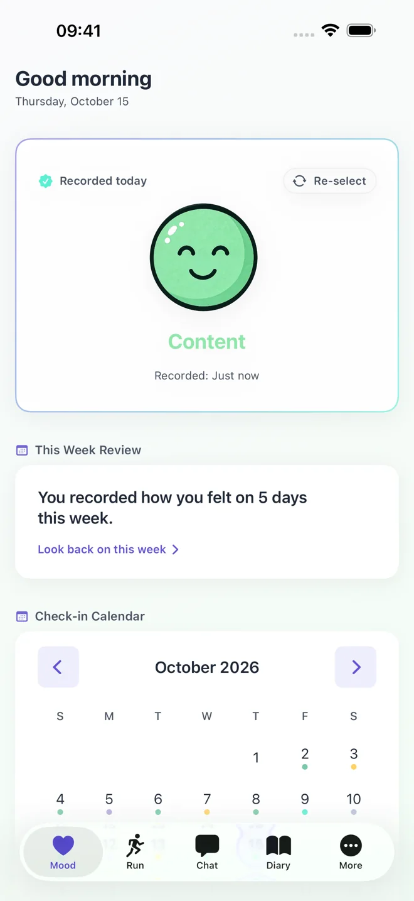
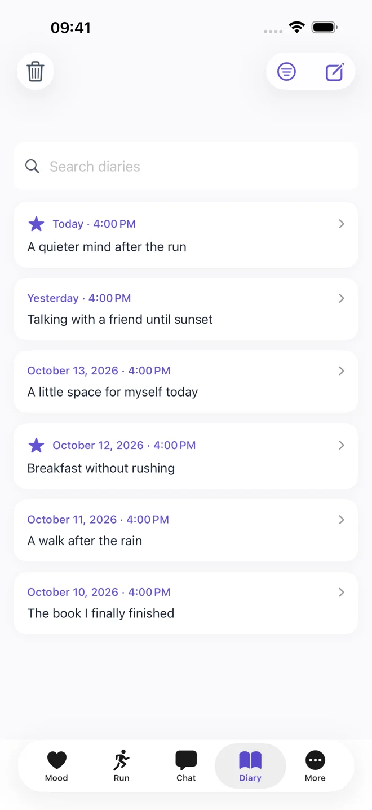
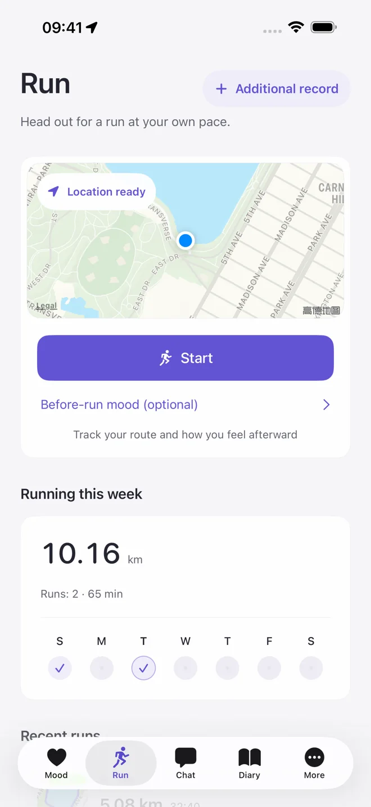

1.1.1 is on the App Store
Pulse Diary
A place for feelings.
A record of your days.
A free mood tracker, personal diary and running log. Choose a mood, write a few lines, or head out for a run. Keep a little of today, at your own pace.
Free download with optional in-app purchases. Core recording needs no account or subscription.
iPhone & iPad: iOS / iPadOS 16.0+
Paired Apple Watch: watchOS 9.0+

A little more care in 1.1.1.
Released . View the App Store version history.
- Easier reading
- Refreshed mood, diary, running, chat and settings pages, with improvements for dark mode, larger text, iPad reading and iPhone Duo dual-screen and folding layouts.
- Careful editing
- Stronger unsaved-draft confirmation and backup restoration safeguards. Input remains available after a failed save so you can act on the error. Read about drafts and saving.
- Daily fixes
- Fixes for regional running-distance input, chat interactions and record saving. Core recording remains free, and AI remains your choice.
A face for every feeling.
Choose from ten moods. Add a note when you have more to say.
 Happy
Happy Content
Content Hopeful
Hopeful Calm
Calm Focused
Focused Tired
Tired Anxious
Anxious Low
Low Angry
Angry Sad
Sad
Your thoughts and your footsteps.
Pulse Diary: Mood & Running (心跳日记) brings mood tracking, a personal journal and running together. Use whichever parts fit your day.
- Mood & calendar
- Pick a mood, leave a note and revisit it in the calendar. Weekly mood reviews are calculated on your device.
- Diary & reflection
- Write whenever you like. Search your entries, browse by date and save favorites. Open an existing entry to read, then choose Edit to make changes; leaving with unsaved changes prompts you first. A daily view brings your moods, diary and runs together.
- Running & routes
- Log distance, duration and how you feel afterward. Add a run manually or allow location access to record a route, with pause and resume. Routes stay on your device.
- Everyday access
- Optional reminders, app lock and local backups. View your mood in a Home Screen widget or record it on a paired Apple Watch.


Your records.
Your choices.
Moods, journal entries, chats, runs and long-term memories are primarily stored on your device. Local recording works offline without an account. Export a backup before changing devices.
Backups contain sensitive content and are not automatically encrypted. The app does not provide its own cloud diary sync.
Read about storage and deletionAI, when you choose.
After explicit consent, chat with AI or turn a conversation into a diary draft or summary. Requests go through the developer's HTTPS backend to DeepSeek and require internet access.
Optional mood, diary, memory and profile context is off by default and can be controlled separately. AI replies can be inaccurate. The app does not provide medical diagnosis, treatment or professional counseling.
Manage AI permissionsFree recording. Optional AI allowances.
Pulse Plus adds more AI chat and generation allowances. Monthly and annual plans have the same benefits.
| Features and allowances | Free | Pulse Plus |
|---|---|---|
| Mood, diary, running, weekly review, search, favorites, app lock and local backups | Included | Included |
| AI chat turns per month | 30 | 600 |
| Diary drafts and chat summaries per month (shared) | 3 | 60 |
| First-use bonus on this device | 20 chat turns + 2 generations | Available without subscribing |
Allowances reset each UTC calendar month and do not roll over. An annual plan does not grant a year's allowance at once. A turn is one message and one valid reply. Diary drafts and summaries share the generation allowance; regenerating uses another generation. Failed requests are not charged and automatic retries are not charged twice.
United States: $2.99 per month or $24.99 per year. Mainland China: CNY 18 per month or CNY 128 per year. Prices elsewhere and final charges are shown on Apple's in-app purchase confirmation.
Subscriptions renew automatically and Apple processes payment. Cancel renewal in system subscription settings; access continues until the paid period ends. Existing records remain available to view and export.
Before you download.
- Current version
- 1.1.1, released 2026-10-29 (Asia/Shanghai). Read what changed. The App Store shows the version currently available in your region.
- Devices
- iPhone, iPad and paired Apple Watch. Widgets and the watch show mood summaries, not diary text or running routes.
- App languages
- Simplified Chinese, Traditional Chinese, English, Spanish, French, German, Japanese, Korean, Brazilian Portuguese, Russian, Arabic, Hindi and Indonesian. The app follows system language preferences.
- Website languages
- English and Simplified Chinese. 阅读简体中文官网.
- Get help
- Read support or email 281916057@qq.com with your app version, device and steps to reproduce the issue.
Product facts checked 2026-10-29. Version, compatibility and availability come from the App Store. Development and support contact 卫智超 maintains feature and data explanations.